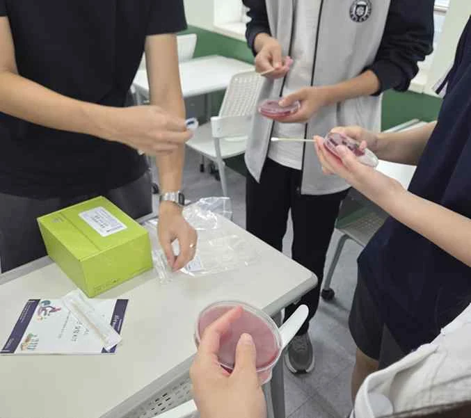

BALANCE / 구강 미생물
강한 항균력이
균형도 지켜 줄까요?
치약 사용 전후의 구강 시료를 배양하고 집락과 용혈 양상을 비교했습니다.
관찰한 것
활동 기록에서 CHX 함유 치약 조건은 일반 치약 조건보다 β용혈 집락의 증가가 크게 나타났습니다.
관찰과 해석 자세히 보기
치약의 항균 작용뿐 아니라 구강 미생물의 구성 변화에도 주목했습니다. 사용 전후의 배양 사진과 용혈 집락을 비교하며 ‘많이 제거하는 것’과 ‘균형을 유지하는 것’의 차이를 질문했습니다.
제한된 시료의 관찰이며, 용혈 양상만으로 균의 종류나 병원성을 확정할 수 없습니다. 특정 치약의 일반적인 건강 효과를 평가한 결과는 아닙니다.
근거: 동아리 활동 보고서 5–7쪽 · 결과 표와 배양 사진